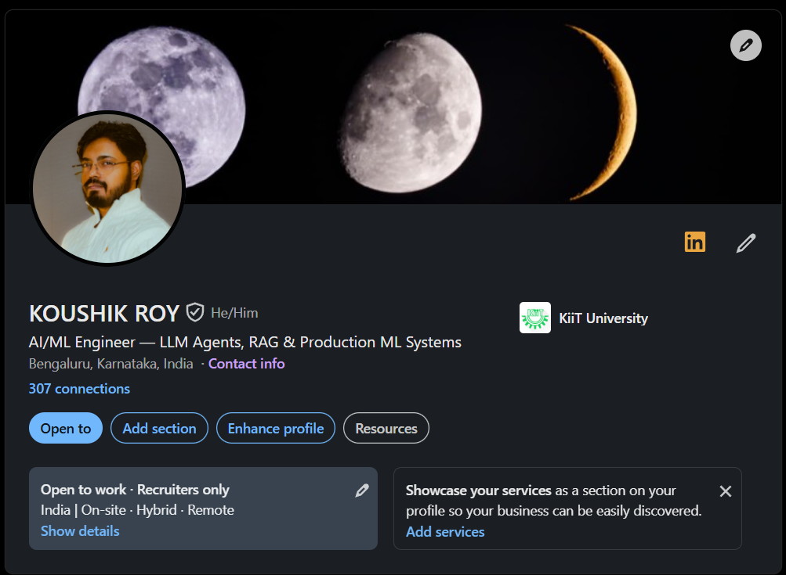

Connect
Find the work. Then find me.
Browse the repositories, preview my professional profile, or start a conversation directly.
01 / GitHub
Projects & repositories
Selected repositories from my GitHub, ordered as a compact list you can open directly.
01koushik-portfolioCSS · Portfolio website↗
02doctask-koushikPython · Document/task project↗
03ImageProcessingPipelineImage-processing pipeline↗
04RAGQuestGame explaining Retrieval-Augmented Generation↗
05AutoRecruiterMailerPython · Automated recruiter mailing↗
06Personal_ATSHTML · Personal ATS and tailoring↗
07Stock_TrackerPython · Stock tracking↗
02 / LinkedIn
Professional profile
Click the preview to open my LinkedIn profile.

03 / Direct